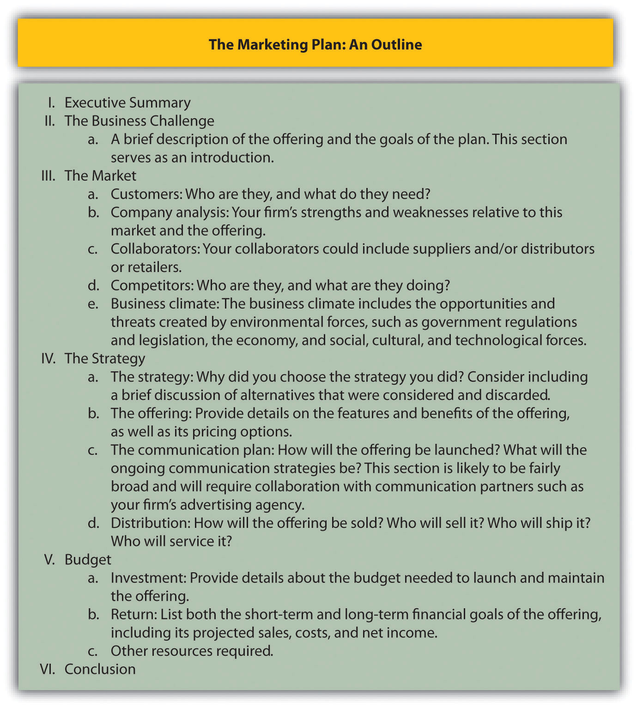
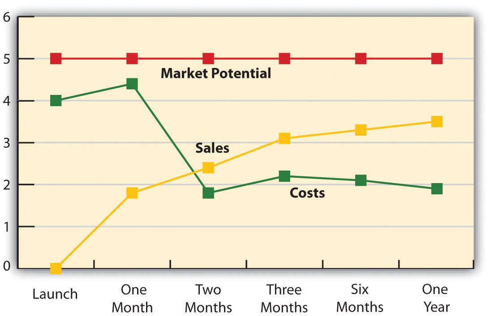
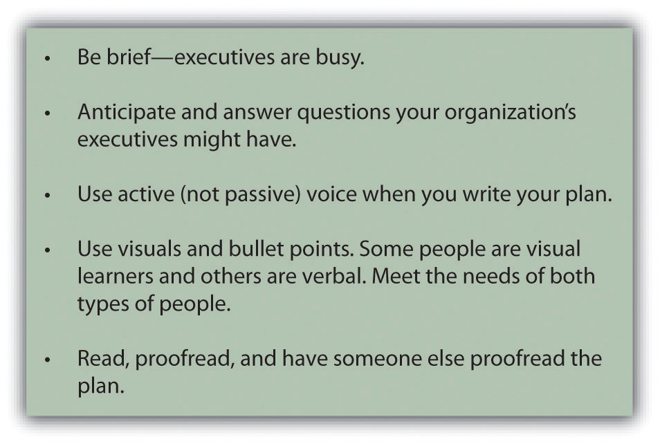

In Chapter 1 "What Is Marketing?", we introduced the marketing plan and its components. Recall that a marketing plan should do the following:
Develop a mission statement, strategy, and organization centered on those needs.
The actual marketing plan you create will be written primarily for executives, who will use the forecasts in your plan to make budgeting decisions. These people will make budgeting decisions not only for your marketing activities but also for the firm’s manufacturing, ordering, and production departments, and other functions based on your plan.
In addition to executives, many other people will use the plan. Your firm’s sales force will use the marketing plan to determine its sales strategies and how many salespeople are needed. The entire marketing staff will rely on the plan to determine the direction and nature of their activities. The advertising agency you hire to create your promotional campaigns will use the plan to guide its creative team. Figure 16.2 "Marketing Plan Outline" shows a complete outline of a marketing plan (you may also want to go to http://www.morebusiness.com/templates_worksheets/bplans/printpre.brc for an example). Next, we will discuss the elements in detail so you will know how to prepare a marketing plan.
Figure 16.2 Marketing Plan Outline
A marketing plan starts with an executive summary. An executive summary should provide all the information your company’s executives need to make a decision without reading the rest of the plan. The summary should include a brief description of the market, the product to be offered, the strategy behind the plan, and the budget. Any other important information, such as how your competitors and channel partners will respond to the actions your firm takes, should also be summarized. Because most executives will be reading the plan to make budgeting decisions, the budgeting information you include in the summary is very important. If the executives want more detail, they can refer to the “budget” section, which appears later in the plan. The executive summary should be less than one page long; ideally, it should be about a half page long. Most marketing plan writers find it easier to write a plan’s summary last, even though it appears first in the plan. A summary is hard to write when you don’t know the whole plan, so waiting until the plan is complete makes writing the executive summary easier.
In the “business challenge” section of the plan, the planner describes the offering and provides a brief rationale for why the company should invest in it. In other words, why is the offering needed? How does it fit in with what the company is already doing and further its overall business goals? In addition, the company’s mission statement should be referenced. How does the offering and marketing plan further the company’s mission?
Remember that a marketing plan is intended to be a persuasive document. You are trying not only to influence executives to invest in your idea but also to convince other people in your organization to buy into the plan. You are also trying to tell a compelling story that will make people outside your organization—for example, the director of the advertising agency you work with, or a potential supplier or channel partner—invest money, time, and effort into making your plan a success. Therefore, as you write the plan you should constantly be answering the question, “Why should I invest in this plan?” Put your answers in the business challenge section of the plan.
The market section of the plan should describe your customers and competitors, any other organizations with which you will collaborate, and the state of the market. We suggest that you always start the section by describing the customers who will purchase the offering. Why? Because customers are central to all marketing plans. After that, discuss your competitors, the climate, and your company in the order you believe readers will find most persuasive. In other words, discuss the factor you believe is most convincing first, followed by the second-most convincing factor, and so on.
Who does your market consist of? What makes these people decide to buy the products they do, and how do they fulfill their personal value equations? What is their buying process like? Which of their needs does your offering meet?
Break the market into customer segments and describe each segment completely, answering those questions for each segment. When you write your plan, begin with the most important segment first and work your way to the least important segment. Include in your discussion the market share and sales goals for each segment.
For example, Progresso Soups’ primary market segments might include the following:
These segments would be based on research that Progresso has completed showing that these are the groups that eat the most soup.
Your discussion of each segment should also include how to reach the customers within it, what they expect or need in terms of support (both presales and postsales support), and other information that helps readers understand how each segment is different from the others. After reading the section, a person should have a good grasp of how the segments differ yet understand how the needs of each are satisfied by the total offering.
Katie Scallan-Sarantakes
http://app.wistia.com/embed/medias/4e5cbb5411A marketing plan has to account for many factors: customers, competitors, and more. Listen as Katie Scallan-Sarantakes describes how she had to consider these factors when creating marketing plans for Toyota.
Include the results of your analysis of your company’s strengths and weaknesses in this section. How is the company perceived by the customers you described earlier? Why is the company uniquely capable of capitalizing on the opportunity outlined in the plan? How sustainable is the competitive advantage you are seeking to achieve?
You will also need to identify any functional areas in which your company might need to invest for the plan to succeed. For example, money might be needed for new production or distribution facilities and to hire new marketing or sales employees and train existing ones.
One tool that is useful for framing these questions is the SWOT analysisAn acronym for strengths, weaknesses, opportunities, and threats, the SWOT analysis is a tool that frames the situational analysis.. SWOT stands for strengths, weaknesses, opportunities, and threats. Strengths and weaknesses are internal, meaning they are conditions of the company. Either these conditions are positive (strengths) or negative (weaknesses). Opportunities and threats are external to the company, and could be due to potential or actual actions taken by competitors, suppliers, or customers. Opportunities and threats could also be a function of government action or changes in technology and other factors.
When working with executives, some consultants have noted the difficulty executives have in separating opportunities from strengths, weaknesses from threats. Statements such as “We have an opportunity to leverage our strong product features” indicate such confusion. An opportunity lies in the market, not in a strength. Opportunities and threats are external; strengths and weaknesses are internal. Assuming demand (an external characteristic) for a strength (an internal characteristic) is a common marketing mistake. Sound marketing research is therefore needed to assess opportunity.
Other factors that make for better SWOT analysis are these:
The SWOT analysis for a company, or for any organization, is both internal and external in focus. Some of the external areas for focus are collaborators (suppliers, distributors, and others), competitors, and the business climate.
Along with company strengths and weaknesses, identify any actual or potential partners needed to pull the plan off. Note that collaborators are more than just a list of suppliers and distributors. Collaborators are those organizations, either upstream or downstream in the value chain, you need to partner with to cocreate value.
For example, AT&T collaborated with Apple to develop the iPhone. AT&T is downstream in the value chain, providing the needed cell service and additional features that made the iPhone so revolutionary. At the same time, however, AT&T was a part of the development of the iPhone and the attendant marketing strategy; the partnership began well before the iPhone was launched.
Your marketing plan, if it is any good at all, is likely to spark retaliation from one or more competitors. For example, Teradata and Unica operate in the same market. Both sell data-warehousing products to companies. Teradata primarily focuses on the information technology departments that support the data warehouse, whereas Unica focuses on the marketing departments that actually use the data warehouse. Nonetheless, Teradata is well aware of Unica’s marketing strategy and is taking steps to combat it by broadening its own market to include data-warehousing users in marketing departments. One step was to teach their salespeople what marketing managers do and how they would use a data warehouse as part of their job so that when these salespeople are talking to marketing managers, they can know what they’re talking about.
Teradata marketing planners also have to be aware of potential competitors. What if IBM or HP decided to enter the market? Who is most likely to enter the market, what would their offering look like, and how can we make it harder for them to want to enter the market? If your company captures their market before they can enter, then they may choose to go elsewhere.
Identify your competitors and be honest about both their strengths and weaknesses in your marketing. Remember that other people, and perhaps other organizations, will be using your plan to create their own plans. If they are to be successful, they have to know what competition they face. Include, too, in this section of the plan how quickly you expect your competitors to retaliate and what the nature of that retaliation will be. Will they lower their prices, create similar offerings, add services to drive up the value of their products, spend more on advertising, or a combination of these tactics?
A complete competitive analysis not only anticipates how the competition will react; it also includes an analysis of the competition’s financial resources. Do your competitors have money to invest in a competitive offering? Are they growing by acquiring other companies? Are they growing by adding new locations or new sales staff? Or are they growing simply because they are effective? Maybe they are not growing at all. To answer these questions, you will need to carefully review your competitors’ financial statements and all information publicly available about them. This can include an executive quoted in an article about a company’s growth for a particular product or an analyst’s projection for future sales within a specific market.
You may have already addressed some of the factors in the business environment that are creating the opportunity for your offering. For example, when you discussed customers, you perhaps noted a new technology they are beginning to use.
A complete coverage of the climate would include the following (the PEST analysis):
A scan of the political climate should include any new government regulations as well as legislation. For example, will changes in the tax laws make for more or less disposable income among our customers? Will the tightening of government regulations affect how salespeople can call on doctors, for example, hindering your marketing opportunity? Will federal policies that affect exchange rates or tariffs make global competitors stronger or weaker? For example, the government introduced the Cash for Clunkers program to encourage people to buy new cars. Within only a few weeks, 250,000 new cars were sold through the program and it ran out of money. Auto dealers were caught unprepared and many actually ran out of popular vehicles.
The economic climate is also important to consider. While 2008 saw tremendous swings in gas prices, other factors such as the subprime lending crisis and decline of the housing market affected everything from the price of corn to the sales of movie tickets. Such volatility is unusual, but it is important nonetheless to know what the economy is doing.
The social and cultural environment is also important to watch. Marketers, for example, may note the rise in the Hispanic population as a market segment, but it is also important to recognize the influence of the Hispanic culture. Understanding the Hispanic culture is important in reaching this market segment with the right marketing mix. In creating marketing campaigns for something such as a financial product, it’s very important to understand the history that Hispanics have had with financial institutions in their home countries. Understanding that culturally Hispanics might not trust financial institutions and developing campaigns that generate positive word of mouth, such as refer-a-friend and influencer tactics, can be explosive once the wall has been torn down.
Finally, the technological environment should be considered. Technology is the application of science to solve problems. It encompasses more than just information (computer) technology. For example, when Ted Schulte (profiled in Chapter 13 "Professional Selling") discusses a pacemaker with a cardiac surgeon, Ted is describing the latest technology available. The new technology could be related to the battery used to power the pacemaker, the materials used in the leads (the wires that connect the pacemaker to the body), or even the material that encases the pacemaker. Understanding the technological environment can provide you with a greater understanding of a product’s life cycle and the direction the market is taking when it comes to newer technologies.
Figure 16.6
Technology encompasses more than just information technology. Produced by Guidant Technologies, this pacemaker utilizes information technology to record heart-function data a doctor can read later. But the product might also utilize other new technologies, such as a new battery, materials used to connect the pacemaker to the heart, and the casing for the pacemaker, all of which affect its performance.
Source: Guidant Technologies, used with permission.
Many of the environmental factors we mentioned impact other factors. For example, technological changes are altering the social and cultural environment. Instead of writing letters to one another, families and friends use e-mail and social networking sites to communicate and maintain relationships. Online communication has affected any number of businesses, including the greeting card business and the U.S. Postal Service, which recently announced it was closing many facilities.
Likewise, the economic environment influences the political environment and vice versa. The huge bailout of the banks by the government is an example of how the economic environment affects the political environment. The laws passed as a result of the bank bailout, which include more-restrictive lending practices, are affecting banks, businesses, and consumers. Any looming changes in the business climate such as this need to be included in your marketing plan.
The next section of the plan details the strategy your organization will use to develop, market, and sell the offering. This section is your opportunity to create a compelling argument as to what you intend to do and why others should invest in the strategy. Your reader will be asking, “Why should we adopt this strategy?” To answer that question, you may need to include a brief discussion of the strategic alternatives that were considered and discarded. When readers complete the section, they should conclude that the strategy you proposed is the best one available.
Provide detail on the features and benefits of the offering, including pricing options, in this section. For example, in some instances, your organization might plan for several variations of the offering, each with different pricing options. The different options should be discussed in detail, along with the market segments expected to respond to each option. Some marketing professionals like to specify the sales goals for each option in this section, along with the associated costs and gross profit margins for each. Other planners prefer to wait until the budget section of the plan to provide that information.
The plan for the offering should also include the plan for introducing offerings that will follow the initial launch. For example, when should Progresso introduce new soup flavors? Should there be seasonal flavors? Should there be smaller sizes and larger sizes, and should they be introduced all at the same time or in stages?
Part of an offering is the service support consumers need to extract the offering’s full value. The support might include presales support as well as postsales support. For example, Teradata has a team of finance specialists who can help customers document the return on investment they would get from purchasing and implementing a Teradata data warehouse. This presales support helps potential buyers make a stronger business case for buying Teradata’s products with executives who control their companies’ budgets.
Postsales support can include technical support. In B2B (business-to-business) environments, sellers frequently offer to train their customers’ employees to use products as part of their postsales support. Before you launch an offering, you need to be sure your firm’s support services are in place. That means training service personnel, creating the appropriate communication channels for customers to air their technical concerns, and other processes.
How will the offering be launched? Will it be like Dow Corning’s launch of a new silicon acrylate copolymer, a product used to add color to cosmetics? That product was announced at the In-Cosmetics trade show in Barcelona. Or will you invite customers, media, and analysts from around the globe to your company’s offices for the launch, as SAS did with its SAS 9 software product?
In addition to the announcement of the new product, the communication plan has to specify how ongoing customer communications will be conducted. The mechanisms used to gather customer feedback as well as how the offering will be promoted to customers need to be spelled out. For example, will you create an online community like Laura Carros did with the JCPenney Ambrielle line?
The discussion of the communication plan can be fairly broad. You can put additional details in a separate planning document that outlines the product’s advertising strategies, event strategies (such as trade shows and special events like customer golf tournaments that will be used to promote the product), and sales strategies.
This section should answer questions about where and how the offering will be sold. Who will sell it? Who will ship it? Who will service and support it? In addition, the distribution section should specify the inventories that need to be maintained in order to meet customer expectations for fast delivery and where those inventories should be kept.
The budget section is more than just a discussion of the money needed to launch the new offering. A complete budget section will cover all the resources, such as new personnel, new equipment, new locations, and so forth, for the launch to be a success. Of course, these resources have costs associated with them. In some instances, the budget might require that existing resources be redeployed and a case made for doing so.
The first portion of the budget will likely cover the investment required for the launch. The plan might point out that additional funds need to be allocated to the offering to make it ready for the market. For example, perhaps additional beta testing or product development over and above what the firm normally commits to new products is needed. Certainly, marketing funds will be needed to launch the offering and pay for any special events, advertising, promotional materials, and so forth. Funds might also be needed to cover the costs of training salespeople and service personnel and potentially hiring new staff members. For example, Teradata introduced a new offering that was aimed at an entirely new market. The new market was so different that it required a new sales force. Details for the sales force, such as how many salespeople, sales managers, and support personnel will be needed, would go in this section.
The budget section should include the costs associated with maintaining the amount of inventory of the product to meet customers’ needs. The costs to provide customers with support services should also be estimated and budgeted. Some products will be returned, some services will be rejected by the consumer, and other problems will occur. The budget should include projections and allowances for these occurrences.
The budget section is also the place to forecast the product’s sales and profits. Even though the plan likely mentioned the sales goals set for each market segment, the budget section is where the details go. For example, the cost for advertising, trade shows, special events, and salespeople should be spelled out. The projections should also include timelines. The sales costs for one month might be estimated, as well as two months, six months, and so forth, as Figure 16.8 "A Marketing Plan Timeline Illustrating Market Potential, Sales, and Costs" shows.
Note that Figure 16.8 "A Marketing Plan Timeline Illustrating Market Potential, Sales, and Costs" shows that the product’s costs are high early on and then decrease before leveling out. That cost line assumes there is a heavy upfront investment to launch the offering, which is usually true for new products. The sales of the offering should grow as it gathers momentum in the market. However, the market potential stays the same, assuming that the potential number of customers stays the same. That might not always be the case, though. If we were targeting mothers of babies, for example, the market potential might vary based on the projected seasonality in birth rates because more babies tend to be born in some months than others.
Figure 16.8 A Marketing Plan Timeline Illustrating Market Potential, Sales, and Costs
In the conclusion, repeat the highlights. Summarize the target market, the offer, and the communication plan. Your conclusion should remind the reader of all the reasons why your plan is the best choice.
Of course, the written plan is itself a marketing tool. You want it to convince someone to invest in your ideas, so you want to write it down on paper in a compelling way. Figure 16.9 "Tips for Writing an Effective Marketing Plan" offers some tips for effectively doing so. Also, keep in mind that a marketing plan is created at a single point in time. The market, though, is dynamic. A good marketing plan includes how the organization should respond to various scenarios if the market changes. In addition, the plan should include “triggers” detailing what should happen under the scenarios. For example, it might specify that when a certain percentage of market share is reached, then the price of the product will be reduced (or increased). Or the plan might specify the minimum amount of the product that must be sold by a certain point in time—say, six months after the product is launched—and what should happen if the mark isn’t reached. Also, it should once again be noted that the marketing plan is a communication device. For that reason, the outline of a marketing plan may look somewhat different from the order in which the tasks in the outline are actually completed.
Figure 16.9 Tips for Writing an Effective Marketing Plan
A marketing plan’s executive summary should include a brief summary of the market, the product to be offered, the strategy behind the plan, and the budget, as well as any other important information. In this section of the plan, the planner describes the offering and a brief rationale for why the company should invest in it. The market section of the plan should describe a firm’s customers, competitors, any other organizations with which it will collaborate, and the climate of the market. The strategy section details the tactics the organization will use to develop, market, and sell the offering. When readers complete the strategy section, they should conclude that the proposed strategy is the best one available.
The budget section of the marketing plan covers all the resources, such as new personnel, new equipment, new locations, and so forth, needed to successfully launch the product, as well as details about the product’s costs and sales forecasts.